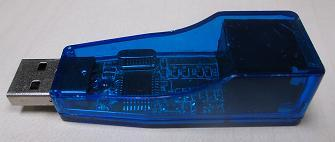
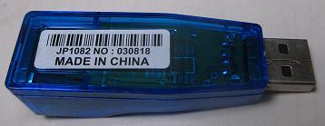
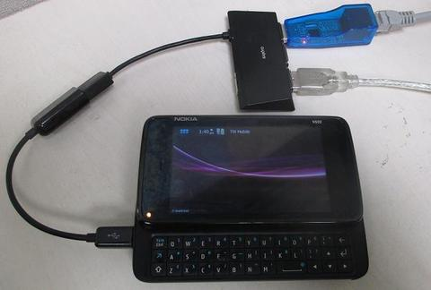

Steward
分享是一種喜悅、更是一種幸福
手機 - Nokia N900 - 連接USB RJ-45(QF9700)
QF9700


切換成USB Host模式並插入QF9700 USB轉RJ-45網卡

掛載QF9700 Driver
$ uname -r
2.6.28.10-power53
$ sudo modprobe mii
$ sudo modprobe usbnet
$ sudo insmod qf9700.ko
$ dmesg
[100823.770294] usb 1-1: New USB device found, idVendor=1a40, idProduct=0101
[100823.770294] usb 1-1: New USB device strings: Mfr=0, Product=1, SerialNumber=0
[100823.770324] usb 1-1: Product: USB 2.0 Hub
[100823.770355] hub 1-0:1.0: state 7 ports 1 chg 0000 evt 0002
[100823.770385] hub 1-0:1.0: port 1 enable change, status 00000503
[100823.867889] hub 1-1:1.0: port 1: status 0101 change 0001
[100823.969390] hub 1-1:1.0: state 7 ports 4 chg 0002 evt 0000
[100823.969543] hub 1-1:1.0: port 1, status 0101, change 0000, 12 Mb/s
[100824.055328] usb 1-1.1: new full speed USB device using musb_hdrc and address 7
[100824.166534] usb 1-1.1: default language 0x0409
[100824.167633] usb 1-1.1: uevent
[100824.167785] usb 1-1.1: usb_probe_device
[100824.167785] usb 1-1.1: configuration #1 chosen from 1 choice
[100824.168518] usb 1-1.1: adding 1-1.1:1.0 (config #1, interface 0)
[100824.168701] usb 1-1.1:1.0: uevent
[100824.169616] drivers/usb/core/inode.c: creating file '007'
[100824.169982] usb 1-1.1: New USB device found, idVendor=0fe6, idProduct=9700
[100824.170013] usb 1-1.1: New USB device strings: Mfr=0, Product=2, SerialNumber=0
[100824.170013] usb 1-1.1: Product: USB 2.0 10/100M Ethernet Adaptor
[100827.256713] qf9700 1-1.1:1.0: usb_probe_interface
[100827.256744] qf9700 1-1.1:1.0: usb_probe_interface - got id
[100827.368865] eth0: register 'qf9700' at usb-musb_hdrc-1.1, QF9700 USB Ethernet, 00:e0:4c:53:44:58
[100827.378540] usbcore: registered new interface driver qf9700
[100827.429840] usbcore: registered new interface driver dm9601
使用DHCP取得IP位址
$ sudo udhcpc
udhcpc (v0.9.9-pre) started
Sending discover...
Sending select for 172.16.215.176...
Lease of 172.16.215.176 obtained, lease time 259200
/etc/udhcpc/default.script: exec: line 7: /etc/udhcpc/default.zeroconf.dhcpup: not found
Resetting default routes
adding dns 8.8.8.8